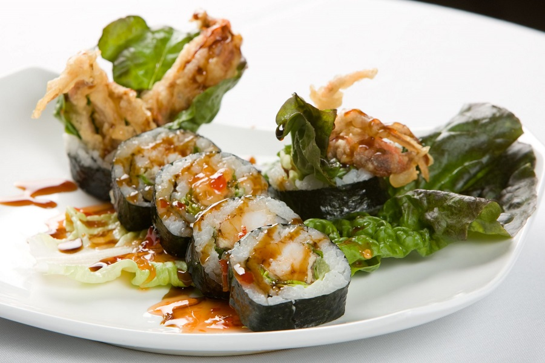

Teppanyaki Entrees, Sushi Rolls.
All hibachi dinners include our house fried rice, sweet glazed carrots, sautéed zucchini and onions, and our signature white yum yum sauce. Hand-rolled sushi is prepared fresh to order at our sushi bar.

Sizzling Hibachi Dinners
Served with house fried rice, sweet carrots, sautéed zucchini, sweet onions, and yum yum sauce.
Tender choice sirloin steak cubes seared on high-heat iron with garlic butter, soy glaze, and cracked black pepper.
Fresh chicken breast tenderloins seared on the teppanyaki flat top with teriyaki sauce and sesame seeds.
Plump jumbo shrimp seared with fresh lemon juice, garlic butter, and toasted sesame seeds.
Flaky Atlantic salmon fillet seared with sweet teriyaki glaze and caramelized sweet onions.
Generous duo combination of seared sirloin steak and tender chicken breast with fried rice and veggies.
Prime sirloin steak bites paired with seared jumbo shrimp, served with extra garlic butter and yum yum sauce.
The ultimate teppanyaki feast: sirloin steak, chicken breast, and colossal jumbo shrimp with a double portion of rice.
Sweet sea scallops seared to golden caramelized perfection on the teppanyaki flat top.
Hand-Rolled Specialty Sushi & Rolls
Crafted fresh to order with sushi-grade fish and seasoned sushi rice.
Crispy fried soft-shell crab, crisp cucumber, avocado, green leaf lettuce, and sweet kabayaki eel sauce.
Fresh raw tuna, salmon, yellowtail, and sliced avocado beautifully layered over a classic crab California roll.
Spicy tuna and tempura crunch inside, draped with fresh Atlantic salmon and ripe avocado slices.
BBQ freshwater eel and cucumber inside, blanketed with avocado slices, masago, and sweet eel sauce.
Fresh diced yellowfin tuna tossed in spicy sriracha oil, scallions, and toasted sesame seeds.
Crab stick, creamy avocado, and crisp cucumber wrapped inside out with toasted sesame seeds.
Wok Fried Rice & Noodles
Stir-fried over roaring open flames with farm-fresh aromatics.
Wok-charred jasmine rice tossed with plump tiger shrimp, scrambled eggs, sweet carrots, and scallions in garlic soy.
Classic wok-fried rice with sliced chicken breast, eggs, onion, diced carrots, and savory soy seasoning.
Thick Japanese udon wheat noodles stir-fried with sliced chicken breast, cabbage, carrots, and sweet savory sauce.
Crispy battered chicken tossed with fiery red chili peppers, sweet onion, and spicy garlic sauce over rice.
Starters & Small Plates
Crispy appetizers and light Japanese starters.
Crispy fried spring roll stuffed with shredded cabbage, carrots, and glass noodles, served with sweet duck sauce.
Three jumbo shrimp dipped in light Japanese tempura batter and fried crisp, served with warm dashi dipping sauce.
Steamed whole soybean pods sprinkled with coarse sea salt. Healthy, warm, and delicious.
Six pork and vegetable dumplings pan-crisped on the griddle, served with seasoned soy dipping vinegar.